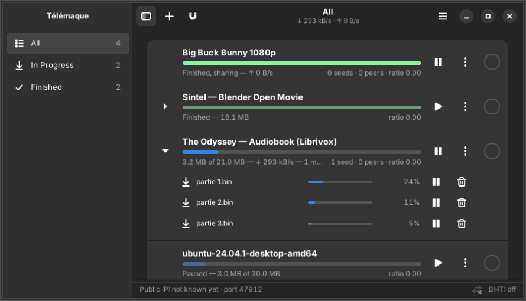
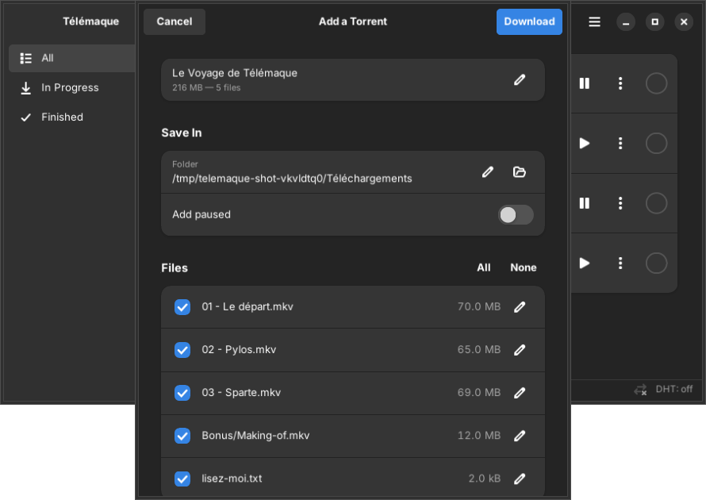
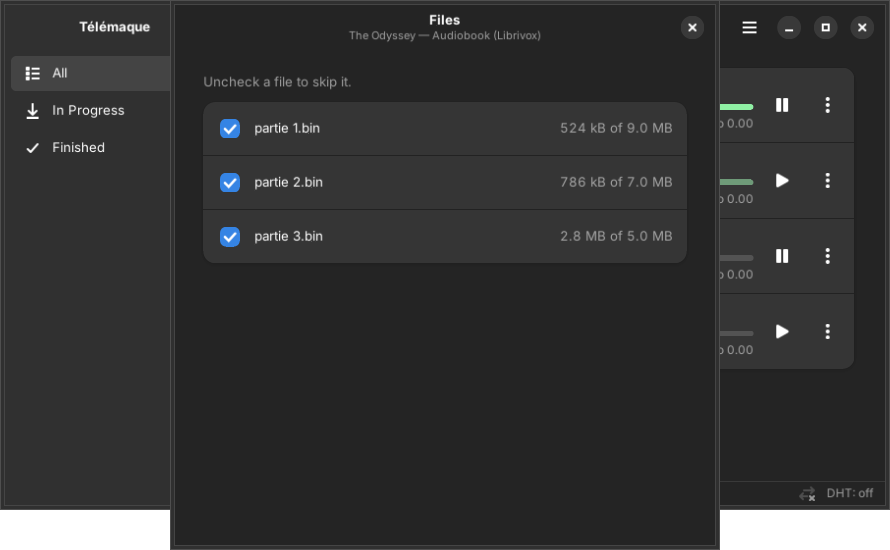
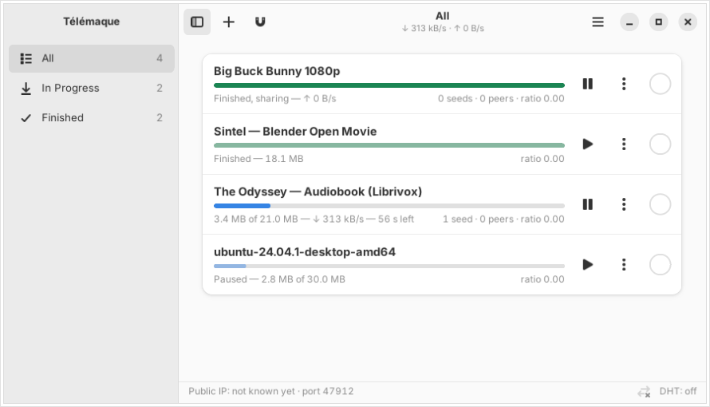

Before starting
- Where to save it, your Downloads folder by default
- Which files to keep: uncheck the bonus of a season pack
- Start right away, or add it paused
- Option: delete the .torrent file once added, to leave fewer files lying around
Télémaque downloads torrents with libtorrent — the engine of qBittorrent and Deluge — in a native GTK4 and libadwaita window that follows your desktop theme. No video sites, no RSS, no search engine, no Flatpak: a plain Debian package.

A .torrent file or a magnet link — from Firefox, your file manager, the clipboard (Ctrl+V) or drag and drop — and Télémaque asks only what matters.

Files can be checked or unchecked during the download, each with its own progress.

Progress, speed, time left, seeds and peers, ratio. A sidebar sorts all, in progress and finished downloads; a status bar shows your public address — the VPN one, if you use a VPN —, the port and the DHT.
No colours of its own: Télémaque follows Adwaita, your accent colour and your GTK4 theme.

Stops sharing at the ratio you choose (1.0 by default), never, or right away.
One download or several at once (round check boxes). Move the files to another folder, rename the folder or any file, during or after the download. Remove from the list only, or delete the files too.
Unfold a torrent to see each of its files with its own progress bar, and stop, resume or delete any one of them.
An incomplete file ends with .part, so it is never mistaken for a finished one. Everything resumes at the next start.
Download and upload limits, listening port, DHT on or off.
A desktop notification when a download is finished, with Open and Show in Folder.
Télémaque asks once: keep running in the background, or quit. In the background, an icon in the top bar shows what is going on and offers Show, Pause All / Resume All and Quit (AppIndicator extension, present on Zorin OS and Ubuntu). The computer does not suspend while a download is running.
Télémaque is available for Ubuntu 24.04 “Noble” and 26.04 “Resolute” and their derivatives — Zorin OS 18, Linux Mint 22 — from a PPA, under X11 or Wayland. Updates then arrive with the rest of your system.
$ sudo add-apt-repository ppa:nourpon/telemaque $ sudo apt update && sudo apt install telemaque # optional: open magnet links and .torrent files with Télémaque $ xdg-mime default io.github.telemaque.Telemaque.desktop x-scheme-handler/magnet application/x-bittorrent
sudo apt install ./telemaque_*_all.debRequirements: Python 3.10+, PyGObject, GTK ≥ 4.14, libadwaita ≥ 1.5, python3-libtorrent 2.0 — all installed by the package.